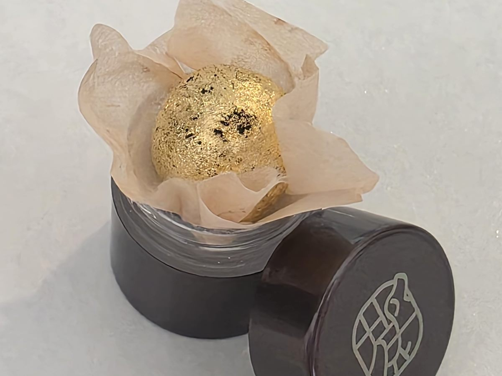
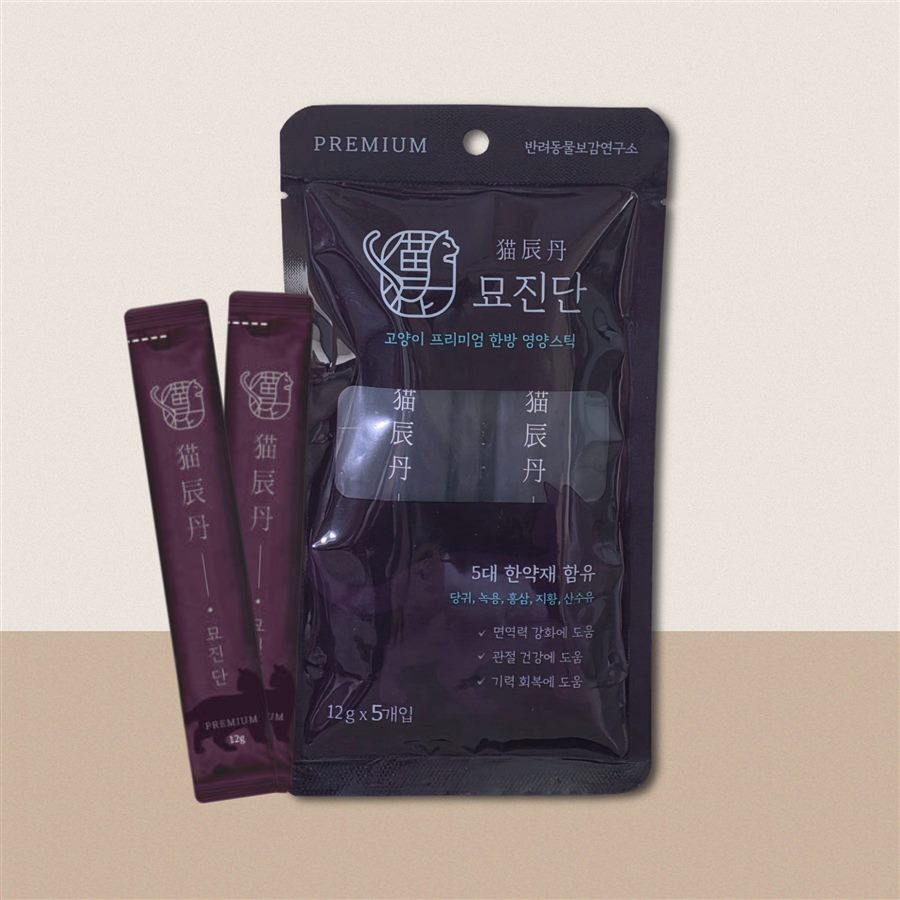
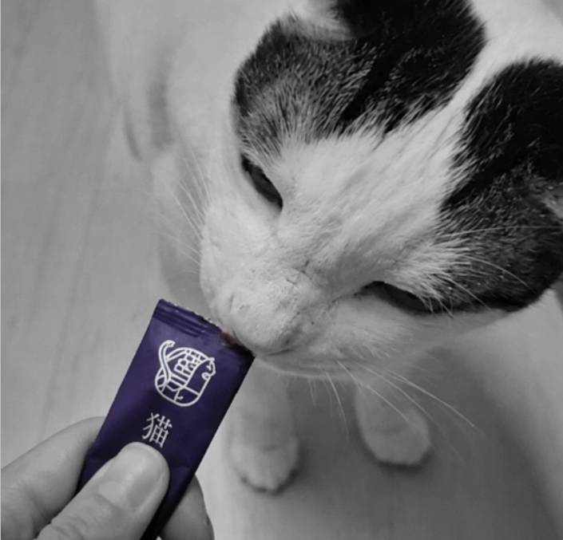
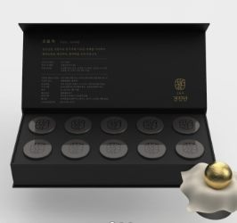
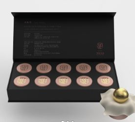
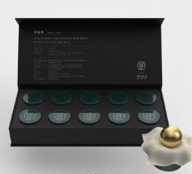
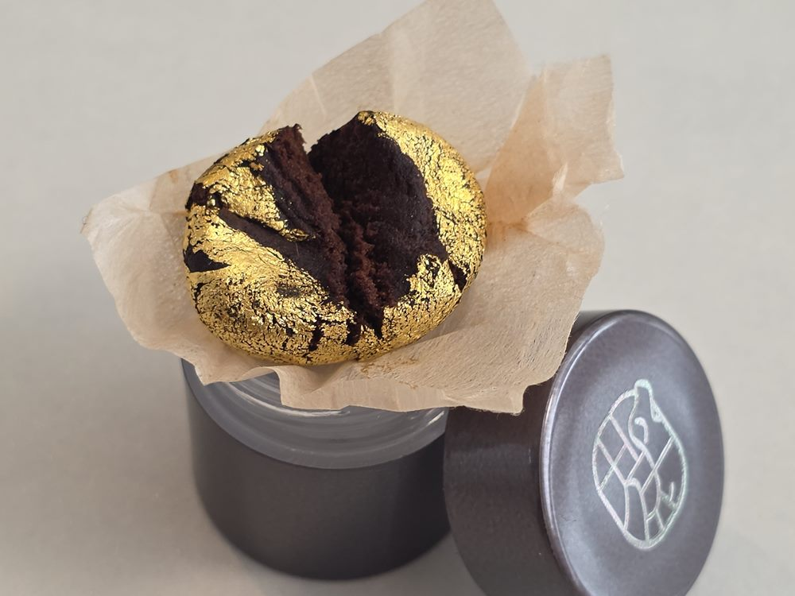

고양이
묘진단
猫辰丹 · 스틱형 12g · 1팩 5포
짜 먹는 스틱형 고양이 한방 영양제. 한방 원료와 필수 영양소를 한 포에 담았습니다.
참치 베이스생후 3개월부터하루 1포
1,500원부터 / 1포
묘진단 보러가기
반려동물 한방 영양제
말 못하는 반려동물의 건강한 삶을 위해. 반려동물보감연구소는 고양이를 위한 묘진단(猫辰丹)과 강아지를 위한 견진단(犬辰丹)을 만듭니다.



ABOUT
말 못하는 반려동물의 건강한 삶을 위해 수의사와 한의사가 함께 연구합니다. 한방 원료를 반려동물이 먹기 좋게 다듬고, 넣지 말아야 할 것은 빼고, 검사로 확인합니다.
PRODUCTS
고양이는 묘진단, 강아지는 견진단. 견진단은 프리미엄 · 유리나리 · 조인트 세 가지가 있습니다.
짜 먹는 스틱형 고양이 한방 영양제. 한방 원료와 필수 영양소를 한 포에 담았습니다.

강아지공진단에서 착안해 반려견에 맞는 한방 원료를 더한 '강아지 보약'. 한 알씩 손으로 빚었습니다.

강아지공진단 기본 원료에 연자육, 녹용, 맥문동, 복령 등을 더한 구성입니다.

강아지공진단 기본 원료에 녹용, 당귀, 천궁, 작약 등을 더한, 산책 좋아하는 활동적인 강아지를 위한 구성입니다.
평점과 리뷰 수는 2026년 11월 네이버 스마트스토어 기준입니다.
FOR CATS
고양이를 위한 짜 먹는 한방 영양제. 묘진단 하나에 반려묘의 필수 영양소를 담았습니다. 고객 요청을 반영해 1팩이 10포에서 5포 구성으로 바뀌었습니다.
| 구성 | 정가 | 판매가 |
|---|---|---|
| 1포 | 1,500원 | 1,500원 |
| 5포 (1팩) | 6,500원 | |
| 10포 (2팩) | 13,000원 | |
| 30포 (6팩) | 31,000원 | |
| 50포 (10팩) | 48,000원 | |
| 100포 (20팩) | 90,000원 |
2026년 11월 스마트스토어 기준. 할인과 쿠폰은 스토어에서 확인해 주세요.
묘진단 구매하기FOR DOGS
공진단에서 착안한 강아지 보약. 금박을 입힌 환을 한 알씩 손으로 빚어 케이스에 담았습니다.
| 구성 | 정가 | 판매가 |
|---|---|---|
| 1환 | 13,000원 | 13,000원 |
| 10환 | 117,000원 | |
| 30환 | 273,000원 |
2026년 11월 스마트스토어 기준. 할인과 쿠폰은 스토어에서 확인해 주세요. 선물용 쇼핑백 옵션이 있습니다.

| 몸무게 | 1세 미만 | 6세 미만 | 7세 이상 |
|---|---|---|---|
| 5kg 이하 | 반 알 | 반 알~1알 | 1알 |
| 5~10kg | 1알 | 1알 | 1알 |
| 10kg 이상 | 1알 | 1알 | 1알 |
소형견은 4등분해서, 10kg 이상 중대형견은 한 알 그대로 주세요. 잘게 잘라 평소 잘 먹는 사료나 간식에 섞어 주면 좋습니다.
FAQ
생후 3개월 이상부터 급여할 수 있어요. 하루 1포(12g)를 권장합니다.
네. 아프지 않은 아이도 매일 영양 보충용으로 급여할 수 있어요.
처음엔 적응 기간이 필요할 수 있어요. 조금씩 먹여 보시고, 평소 잘 먹는 간식이나 사료에 섞어 주셔도 좋아요.
보존제를 넣지 않아 유통 중 포장이 손상되면 생길 수 있어요. 급여하지 마시고 스마트스토어 톡톡으로 문의해 주세요.
4등분하거나 잘게 잘라 평소 잘 먹는 사료나 간식에 섞어 주세요.
모두 같은 공진단 기본 원료에서 출발하고, 함께 넣은 한약재 구성이 다릅니다. 유리나리는 연자육·녹용·맥문동·복령, 조인트는 녹용·당귀·천궁·작약 등을 더했어요. 가격과 구성(1환·10환·30환)은 세 제품이 같습니다.
고양이용으로는 묘진단이 따로 있어요. 묘진단은 강아지가 먹어도 괜찮습니다.
아이 상태에 따라 다르니 다니시는 동물병원과 먼저 상담해 주시고, 궁금한 점은 스마트스토어 톡톡으로 문의해 주세요.